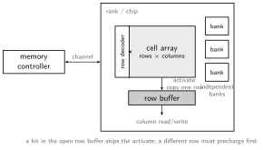

DRAM stores bits as charge that needs refresh; NAND flash stores persistent threshold-voltage states. Their physical constraints shape memory controllers and SSD firmware.
| SRAM (caches) | DRAM (main memory) | |
|---|---|---|
| cell | 6 transistors, bistable | 1 transistor + 1 capacitor; the charge is the bit |
| density | low | high: why main memory is DRAM |
| speed | lower latency; depends on array size | higher array-access latency; sensing and restoration required |
| retention | holds while powered | leaks; must be refreshed (the “dynamic”) |
ACTIVATE connects a row’s cells to bitlines; sense amplifiers detect the small voltage changes, latch the values, and restore disturbed cell charge. Subsequent READ/WRITE commands access the open row buffer. PRECHARGE prepares the bank for another row; refresh performs restoration without returning user data.
DRAM is a hierarchy, each level exposing parallelism or amortizing cost:

| Level | Role |
|---|---|
| channel | independent bus + controller; channels run fully in parallel |
| rank | chips selected together to supply the rank’s data width; bursts transfer larger blocks |
| bank | independent array within a rank; bank-level parallelism hides latency |
| row (page) | a few KiB read into the row buffer by one ACTIVATE |
| column | the cache-line slice a READ/WRITE actually moves |
Three commands drive a bank: ACTIVATE (open a row into the row buffer), READ/WRITE (move a column), PRECHARGE (close the row so another can open). Bank-access command latency depends on row-buffer state; queueing, bus contention, and refresh add further delay:
| Case | Commands needed | Latency |
|---|---|---|
| row hit | READ | fast |
| row empty | ACTIVATE, READ | medium |
| row conflict | PRECHARGE, ACTIVATE, READ | slow |
Open-page policy keeps a row open for likely reuse; closed-page policy precharges after access. Adaptive policies balance row locality against future conflicts.
DRAM generations have increased density and bandwidth much more than they have reduced fundamental array-access latency. Banks, channels, and request concurrency help hide latency; they do not eliminate it.
The controller schedules commands under DRAM timing constraints. FR-FCFS favors ready commands (often row hits), then age. This can improve throughput but is not universally optimal and may starve other request streams; fairness-aware policies bound the interference.
The controller also chooses how address bits map to channel/rank/bank/row. The two goods are in tension: consecutive addresses in the same row maximize row hits, consecutive addresses across banks maximize parallelism. Real mappings (XOR-based bank hashes) balance the two and break pathological strides.
Refresh restores rows within the device’s specified retention interval, consuming bandwidth and energy. Requirements depend on device and temperature; 64 ms is a common historical example, not a universal constant.
Repeated activation can disturb nearby DRAM cells and flip bits (RowHammer). This can violate isolation even when software never directly accesses a victim address. Mitigations include refresh/activation controls, physical isolation, and error protection; effectiveness depends on device and access pattern. See Kim et al. (ISCA 2014) for the original characterization.
DRAM’s interface scales where its cell cannot. DDR transfers on both clock edges in bursts whose size depends on the interface and configuration; successive generations increase transfer rates and bank-level concurrency. LPDDR targets low-power systems; GDDR targets graphics bandwidth. Bandwidth and energy depend on the specific interface and configuration. HBM stacks DRAM dies on the package and connects them with thousands of through-silicon vias: a wide interface at modest clock, feeding the bandwidth-bound accelerators and GPUs. Achieved bandwidth still depends on the request stream keeping many banks busy: the memory-level parallelism that MSHRs exist to generate.
SSDs commonly use NAND flash: charge stored in a floating gate or charge-trap structure, shifting the transistor’s threshold voltage: non-volatile, and readable as one of several charge bands. Bits per cell is a density-versus-margin trade: SLC (2 levels) through QLC (16 levels) buys 4x density while shrinking noise margins, cutting speed and endurance, the same slicing trade as quantization in Deep Learning Accelerators.
The constraint that shapes every SSD
Flash reads and programs at page granularity (4-16 KiB) but erases only whole blocks (hundreds of pages), and a page can only be programmed after its block is erased. In-place overwrite is impossible: changing data means writing a fresh page elsewhere and abandoning the old one. Everything below exists because of this one asymmetry.
The FTL (flash translation layer), firmware on the drive’s own controller, maintains the fiction of overwritable logical blocks:
Flash suffers read disturb, retention loss, and wear-induced errors. SSD controllers use ECC, retry, bad-block management, and spare capacity to provide reliable logical storage.
Author: Sai Govardhan (saigov14@gmail.com)
License: MIT.